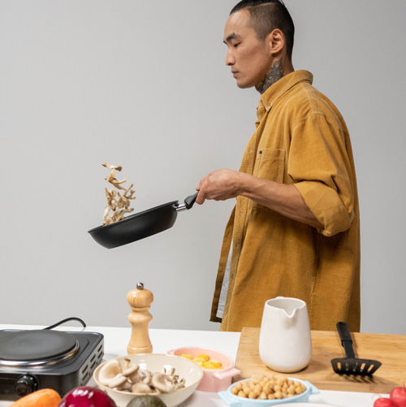
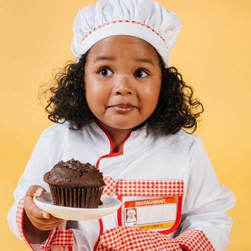
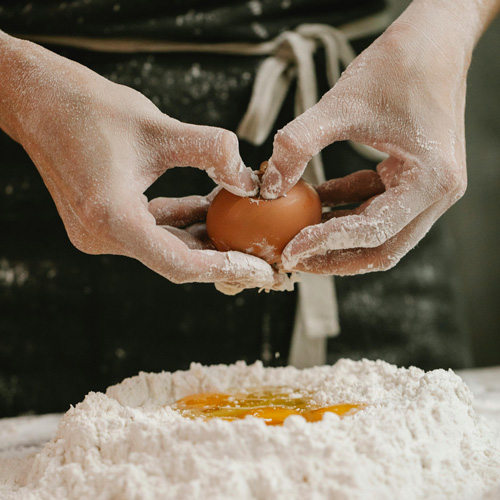

Descubre el Arte de Cocinar: Aprende, Inspírate y Saborea
Bienvenido a nuestra sección exclusiva "Aprender a Cocinar", donde te sumergirás en el fascinante mundo de la cocina. Desde recetas básicas hasta platos gourmet, estamos aquí para guiarte en cada paso del proceso culinario. Explora nuevos sabores, técnicas y secretos que harán que tus creaciones en la cocina sean inolvidables. ¡Prepárate para convertirte en un chef en tu propio hogar y deleitar a tus seres queridos con deliciosas experiencias gastronómicas!
Ver Recetas


